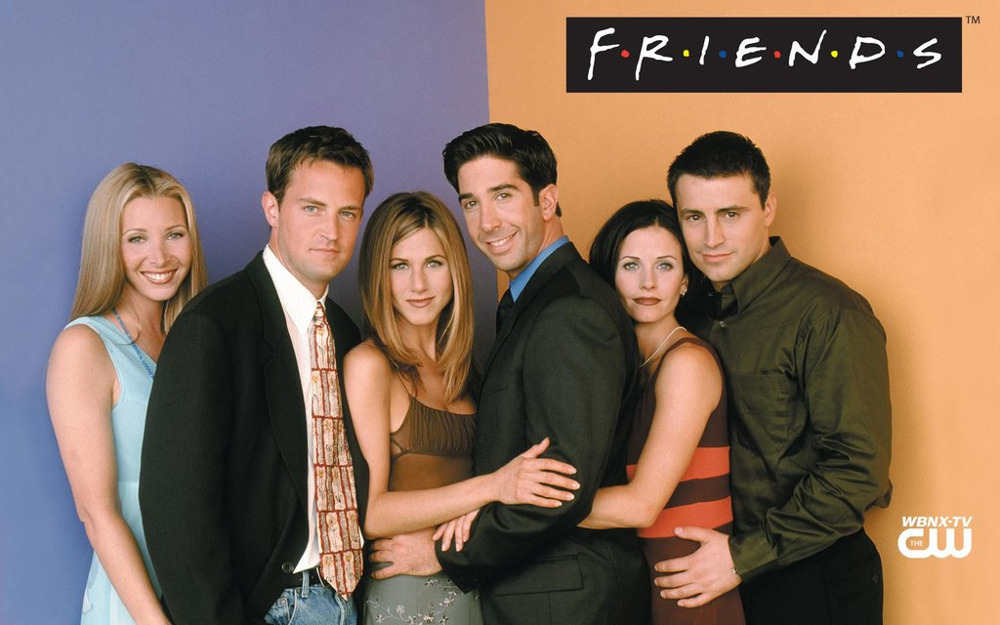
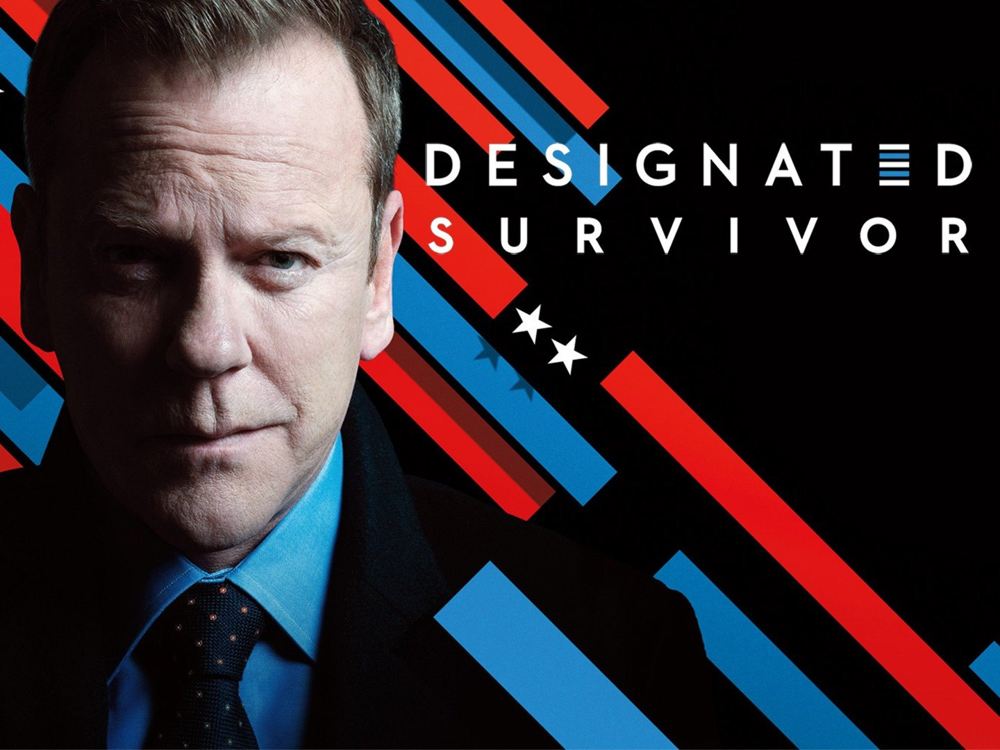
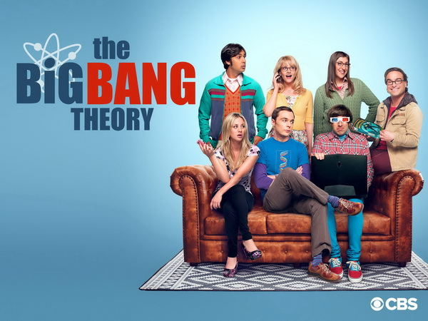
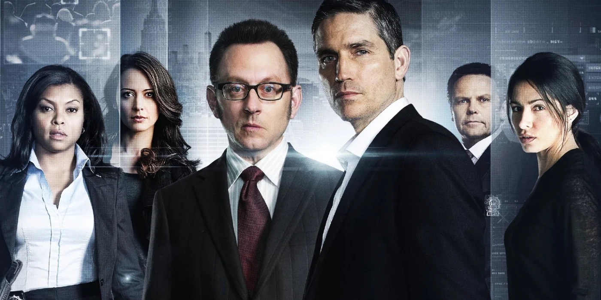
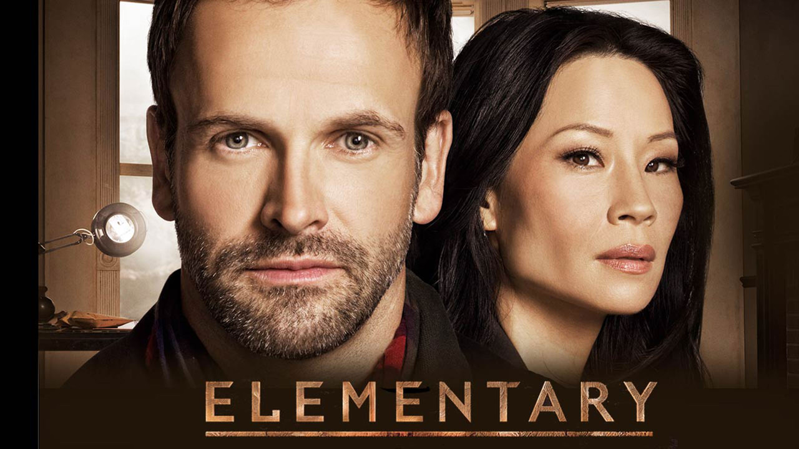

Movies
I am big fan of series movies. Especially situational comedy and crime genres. Here are some of my all-time favourites from those I've watched over the years I think many would enjoy!Friends
(1994-2004)
Follows the personal and professional lives of six twenty to thirty-something-year-old friends living in Manhattan.Rachel Green, Ross Geller, Monica Geller, Joey Tribbiani, Chandler Bing and Phoebe Buffay are six 20 something year-olds, living off of one another in the heart of New York City.
Designated Survivor
(2016-2019)
A low-level Cabinet member becomes President of the United States after a catastrophic attack kills everyone above him in the line of succession.
The Big Bang Theory
(2007-2019)
The Big Bang Theory is a comedy about brilliant physicists, Leonard and Sheldon, who are the kind of "beautiful minds" that understand how the universe works. But none of that genius helps them interact with people, especially women. All this begins to change when a free-spirited beauty named Penny moves in next door.
Person of Interest
(2011-2016)
The series centers on a mysterious reclusive billionaire computer programmer named Harold Finch (Michael Emerson), who develops a computer program for the federal government known as "The Machine" that is capable of collating all sources of information to predict and identify people planning terrorist acts.
Elementary
(2012-1019)
Sherlock Holmes (Jonny Lee Miller) is a recovering addict who meets Joan Watson (Lucy Lui) as his 'sober companion'. Initially their relationship is strictly professional, and somewhat frosty, but they grow to understand and work with one another, eventually forming a friendship and partnership. Together they assist Captain Gregson and Detective Bell of the NYPD, where Holmes' observational abilities and deductive talent unravel a series of complicated cases. Alongside his police work, Sherlock struggles with a past he left behind in London involving an ex-girlfriend Irene Adler, a 'nemesis' in Moriarty, and an absent father.


FOLLOW ME ON TWITTER